1부 · CNN 기초
CNN 기초와 학습
이미지를 픽셀 그대로 넣으면 왜 안 되는가
중앙대학교 도시공학과 Urban D&A 연구실
오늘의 질문
이미지를 픽셀 그대로 넣으면
왜 안 되는가?
지금까지 쓴 덴스 레이어는 모든 입력을 모든 뉴런에 이었다. 사진 한 장에 그대로 쓰면 무슨 일이 생기나.
덴스 레이어는 전부 잇는다
Fully Connected
입력 하나가 다음 층의 모든 노드에 연결된다. 지난주 생활인구 모델은 이 층을 몇 겹 쌓아 파라미터 1,185개였다.
사진 한 장이 입력 100만 개
500 × 500 × 4

사진 한 장이 셀 수 없는 연결선으로 부풀어 덴스 레이어를 덮치는 그림
앉은 자리에서 사진 하나 넣었을 뿐인데 이렇게 된다. 덴스 레이어로는 시작조차 못 한다.
가까운 것끼리만 잇는다
Conv1D · filters=1 · kernel_size=2
연결은 네 번인데 가중치는 세 개뿐이다. 같은 가중치가 옆으로 밀려 가며 재사용된다.
덴스와 무엇이 다른가
장점은 둘이다
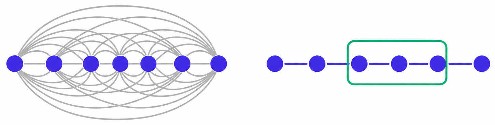
전부와 이어진 엉킨 그물과, 옆자리끼리만 이어진 깔끔한 사슬
가중치가 적다
같은 입력에 덴스는 30개, 합성곱은 3개. 열 배 차이고, 그만큼 빠르다.
인접성을 구조로 못 박는다
“멀리 있는 애들하고 사귀지 마.” 입력 순서가 결과에 영향을 준다.
그럼 어떤 데이터에 맞을까 — 옆자리가 의미 있는 데이터다.
시계열(어제와 오늘), 그리고 이미지(옆 픽셀). 2주차 시계열에서 같은 이야기가 다시 나온다.
필터 하나 = 관계 하나
필터를 늘리면 다른 관계를 같이 실어 보낸다
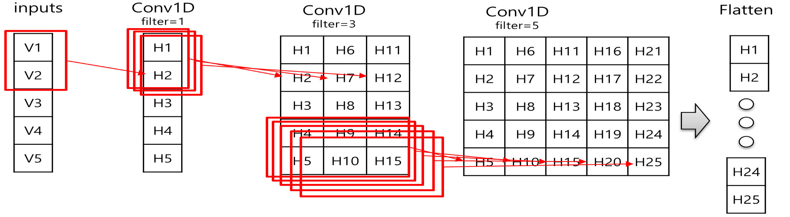
입력 5개에 Conv1D 필터를 1개·3개·5개로 늘렸을 때 만들어지는 노드
필터 1개 — 관계를 설명하는 방식이 하나뿐이다
필터 3개 — 같은 자리에 세 줄이 동시에 생긴다
필터 5개 — 5 × 5 = 25칸, 이걸 펴서 덴스로 보낸다
“오른 것”과 “내린 것”을 동시에 전달하고 싶으면 필터가 둘 이상이어야 한다.
손잡이 세 개
kernel_size · padding · strides
정답을 고민하지 말 것 — 경사하강이 뭉개 버린다. 대신 에러를 잡을 때 이 구조를 알면 “이 관계를 아예 안 보고 있구나”가 보인다.
쌓으면 차원이 늘어난다
그래서 마지막에 Flatten 이 필요하다
우리가 원하는 답은 숫자 하나다. 그래서 끝에서 한 줄로 펴고 덴스를 붙인다.
한계를 먼저 본다
가볍지만 성능을 보장하지는 않는다
이 데이터는 필드 순서에 의미가 없다. 대지 비율 옆에 도로 비율이 있는 게 아무 뜻도 아니다.
그럼 옆자리가 정말 의미 있는 데이터는 무엇인가 — 이미지다.
2부 · 이미지 데이터
입력만 바뀐다.
출력은 그대로다
숫자 줄과 건물 사진이 같은 관으로 들어가 같은 출력 하나로 나오는 그림
지금까지 입력은 독립변수였다. 지금부터 그 자리에 사진이 들어간다. 맞혀야 할 답은 달라지지 않는다.
뉴럴 네트워크가 다룰 수 있는 데이터에는 한계가 없다. 우리가 취급할 것을 숫자로 환원할 수만 있으면 된다.
관점을 바꾸는 한 장
이미지도
데이터다
RGB 세 색이 얼마나 진한지만 들고 있다. 그 진하기를 0~255 숫자로 적는다.
500 × 500 이면 빨강 25만 개, 초록 25만 개, 파랑 25만 개. 투명도까지 네 층이다.
파이썬 이미지 라이브러리로 열면 그냥 넘파이 배열로 들어온다.

Red · Green · Blue · Transparency 네 개의 숫자 층
숫자를 바꾸면 그림이 바뀐다
12 이미지구조.ipynb
빨강을 255로

빨강 채널 앞 200줄을 255로 채운 결과
빨강 ↔ 파랑
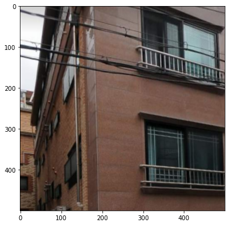
빨강 채널과 파랑 채널을 맞바꾼 결과
세 장 모두 같은 사진이다. 배열 안의 숫자만 건드렸다.
회색조
세 층을 한 층으로
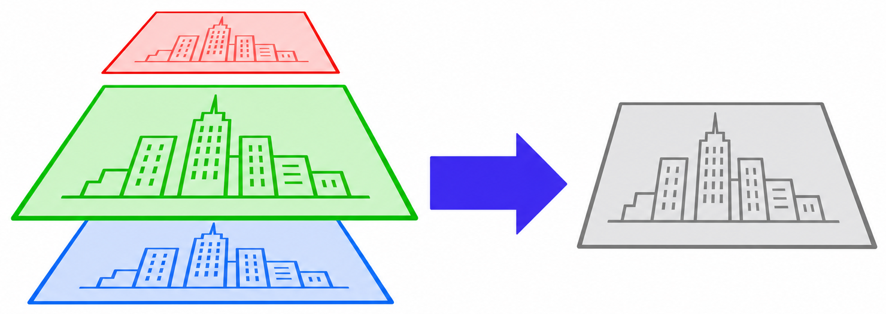
빨강·초록·파랑 세 장이 회색 한 장으로 합쳐지는 그림
회색 = 0.2989 R + 0.5870 G + 0.1140 B
계수 셋을 더하면 1이 된다. 초록이 가장 큰 이유는 사람 눈이 초록에 제일 민감해서다.
이것도 차원 축소다 — 네 층을 한 층으로. 뒤에 나올 MNIST 가 바로 한 층짜리다.
반대로도 된다
숫자를 적어
그림을 만든다
배열에 값을 직접 써 넣고 합쳐서 출력하면 적은 그대로 나온다.
실습에서 이 값을 직접 바꿔 볼 것. 숫자와 그림이 서로 치환된다는 감각이 오늘 2부의 목표다.
커널 3은 9칸이 아니다
Conv2D · 채널까지 통째로 퍼 간다

RGBT 네 층으로 쌓인 입력 데이터와, 그 깊이만큼 두꺼운 3×3 커널
커널의 깊이는 고르는 게 아니다 — 입력 채널 수에서 이미 정해진다.
채널이 넷이면 9 × 4 = 36개 값이 한 번에 모인다. 절편을 더해 37개.
답을 미리 알고 돌려 본다
set_weights 로 가중치를 박아 넣는다
실제로 돌리면 540 · 360 · 180 이 그대로 나온다. 값이 어떻게 흐르는지 머릿속에 있어야 중간에서 자르고 붙일 수 있다.
왜 이런 발상이 나왔나
필터는 원래
사람이 정했다
포토샵의 그 필터다. 전부 3 × 3 숫자판 하나다.
CNN 이 한 일은 그 숫자를 학습으로 찾게 한 것이다.
“어떤 필터를 쓰면 더 좋은 정보가 나오는지 네가 찾아봐.”
실습에서 가우시안 블러 · 샤프닝 · 엠보싱 · 엣지를 직접 씌워 볼 것.

Identity · Edge detection · Sharpen · Box blur 필터와 그 결과
Pooling
뭉갤 때
무엇을 남길까
Max — 제일 큰 값. 필터가 찾아낸 경계가 살아남는다.
Average — 평균. 고르게 가져가지만 경계가 흐려진다.
그리고 풀링을 지나면 크기가 확 줄어든다 — 차원을 계단식으로 내리는 장치다.

4칸을 하나로 줄이는 풀링 도해

송파 빌라 외벽 로드뷰 크롭 이미지 모음
4부 · 도시 데이터
외벽이 벽돌인가
대리석인가
송파 빌라 주소를 뽑아 로드뷰로 바라보고 같은 크기로 자른 138장.
건물 외벽 재료는 어떤 공적 데이터에도 없다.
그래서 우리가 만든다 — 이것이 도시 분야에서 이미지가 갖는 값어치다.
Colab 에서 바로 열기 · 건물외벽학습.ipynb →
제일 힘든 일
라벨링
필드는 셋뿐이다 — 파일명, 타입, 값. 벽돌 0 · 대리석 1.
138장을 하나하나 열어서 한땀한땀 집어넣었다. 모델 만드는 시간보다 이게 훨씬 오래 걸린다.
학습 100장
검증 38장
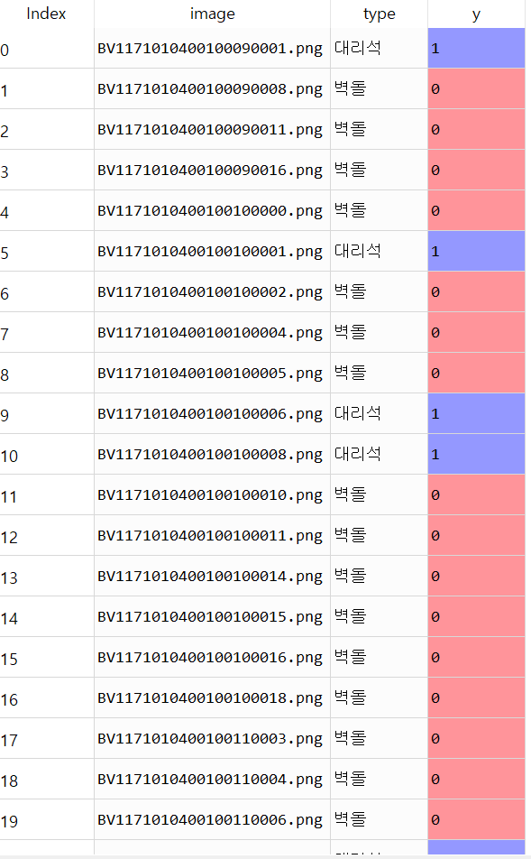
파일명 · 타입 · 값 세 필드로 된 라벨 테이블
학습 전에
왜 255로
나누나
활성화 함수는 입력이 0 근처일 때만 기울기가 살아 있다.
숫자가 크면 기울기가 사라져 학습이 한없이 느려진다. 그래서 0~1 사이로 눌러 놓는다.
정규화 레이어를 써도 된다 — 여기서는 그냥 255로 나눴다.

Sigmoid · TanH · ReLU 의 모양 — 양끝이 평평하다
크기는 줄고, 피처는 늘어난다
앞으로 논문에서 끝없이 보게 될 그림

500×500×4 입력에서 25@1×1 까지 줄어드는 외벽 학습 ConvNet 도식
합성곱 레이어에는 활성화가 없다 — 그래서 뒤에 LeakyReLU 를 따로 붙인다.
사진을 넣었는데 가중치가 7,636개
지난주 표 데이터 모델은 7만 개가 넘었다
필터를 잔뜩 넣은 것 같은데도 열 배 가볍다. 그러면서 인접성을 살린다 — 이미지에는 특효약이다.
100 epoch
정확도 91%
예측값은 딱 1이 되지 않는다. 0.999 · 0.004 처럼 가까이 갈 뿐이다.
이미지 학습은 GPU 와 CPU 차이를 피부로 느낄 수 있다. 런타임을 바꿔 한 번 돌려 볼 것.
한계
흰 벽돌을
못 맞혔다
모델이 결을 본 것인지 색을 본 것인지 우리는 알 수 없다.
100장으로 학습했으니 이런 착각이 생긴다. 더 많은 패턴, 데이터 증강, 샘플링, 더 센 일반화 — 6·생성 모델가 그 이야기다.

검증에서 틀린 외벽 이미지
필터마다 다른 것을 본다
층마다 중간 출력을 꺼내 본 것
같은 사진인데 필터마다 잡아낸 것이 다르다. 풀링을 지나면 뭉개지지만 성격은 그대로 따라간다.
사진 한 장이 숫자 25개
모델 15번 레이어에서 잘라낸 값
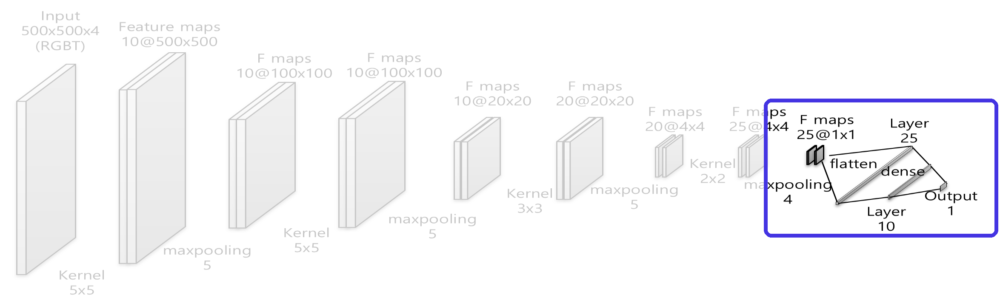
ConvNet 전체 도식에서 flatten 구간만 밝게 강조한 그림
CNN 은 분류기이기 전에 요약기다. 이 이야기가 2주차 컨텍스트 벡터에서 그대로 다시 나온다.
5부 · 격자 데이터
한 칸에 네 가지가 쌓인다
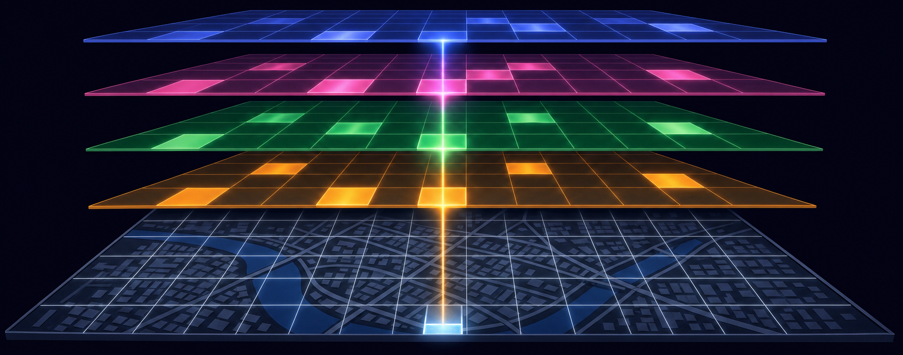
지도 위에 씌운 100m 격자와 그 위로 쌓인 네 장의 데이터 층
주택 수
거주인구 수
직장인구 수
거주자 추정소득
격자를 쓰는 이유는 간격이 균질하기 때문이다. 단점은 그 균질한 데이터를 만들기가 아주 어렵다는 것.
격자 한 칸이 픽셀 한 칸이다
100m × 100m
다른 것은 칸에 든 숫자의 뜻뿐이다. 층 수도 넷일 필요가 없다 — 열 층도 스무 층도 된다.
배후지를 보고 가운데 매장의 매출을 맞힌다
서울 355개 매장 · 1.1km × 1.1km · 2023.12
X 의 모양은 355 × 11 × 11 × 4. 지난주 외벽이 138 × 500 × 500 × 4 였던 것과 똑같이 읽으면 된다.
층마다 단위가 다르다
이미지는 전부 0~255 였다
맨 앞에 BatchNormalization 을 한 장 넣어 층을 맞춘다.
목표값 매출액에는 MinMax 스케일러를 미리 건다.
맞히려는 게 금액이므로 마지막 활성화는 linear, 손실은 MSE, 지표는 MAE.
읽는 법이 외벽 모델과 똑같다
11×11×4 → 피처 10개 → 매출액
이 자리에 들어갈 수 있는 건 브랜드 매출만이 아니다 — 아파트 시세도, 유동인구도 된다.
조건은 하나 — 공간의 정보를 최대한 담아 줄 것. 합성곱은 이미지 전용 도구가 아니다.

paperswithcode 의 ImageNet 분류 리더보드
크게 만든다고 올라가지 않는다 — 가중치는 적게, 성능은 높게, 속도는 빠르게.
paperswithcode.com — 리더보드와 논문 링크가 같이 있다. 이론적 배경 잡을 때 쓸 것.
LeNet — 1998
MNIST 필기체 · 테스트 98.8%

LeNet-5 구조 — 32×32 에서 120 피처 벡터까지
우리가 방금 배운 방식으로 그대로 읽힌다 — 합성곱, 서브샘플링, 합성곱, 서브샘플링, 플래튼, 덴스.
라벨을 0~9 숫자 그대로 주면 안 된다. 0과 1의 간격이 1과 2의 간격과 같다고 가정해 버린다 — 원핫으로 바꿔 간격을 없앤다.
AlexNet — 2012
가중치 5천만 개 · 출력 1000개

AlexNet 구조 — 227×227×3 에서 출력 1000까지
출력이 1000개인 이유 — ImageNet 의 카테고리가 1000개다.
필터를 늘리면 담을 수 있는 관계가 늘지만 학습이 느려진다. 어디까지 늘릴지는 감이다.
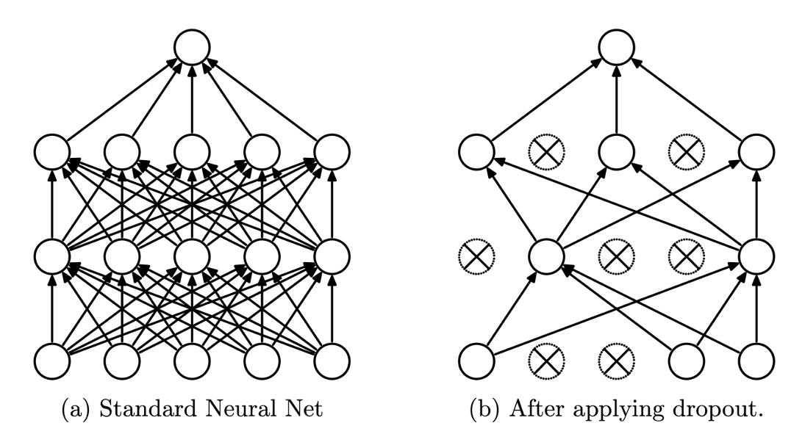
Standard Neural Net 과 After applying dropout 비교
AlexNet 이 가져온 것
일부러
꺼 버린다
학습할 때마다 노드 일부를 무작위로 끈다. 한 경로에만 의존하지 못하게 만든다.
우리 모델은 합성곱 구간에는 걸지 않았다. 피처 뽑는 데는 모두 참여하고, 판단하는 덴스 구간에만 걸었다.
그 뒤의 계보
VGG · ResNet · DenseNet · EfficientNet
계보 전체가 같은 질문 하나에 답해 왔다 — 어떻게 하면 더 적은 가중치로 더 좋은 피처를 뽑을까.
실무
다시 만들지
않는다
케라스가 학습된 가중치까지 같이 준다. 한 줄이면 불러온다.
고를 때 정확도만 보지 말 것. 파라미터 수와 추론 시간을 같이 본다 — 연구실 GPU 냐 현장 기기냐에 따라 답이 다르다.
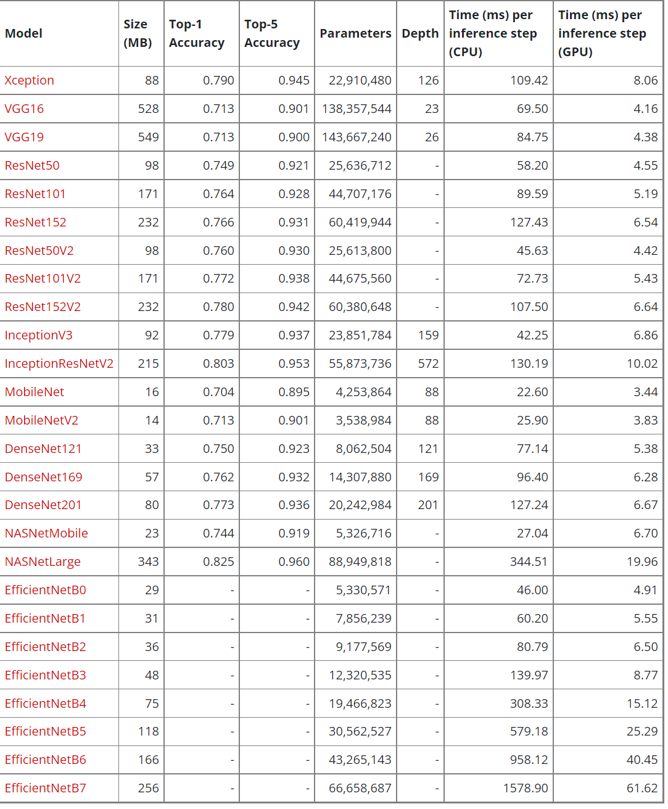
케라스가 제공하는 학습 모델 목록 — 용량·정확도·파라미터·깊이·추론 시간
3분 · 옆 사람과
하나만 골라 이야기해 보자
Q1 우리 모델이 외벽의 결을 본 것인지 색을 본 것인지, 어떻게 확인하겠는가?
Q2 로드뷰 이미지에서 외벽 재료 말고 또 무엇을 라벨링할 수 있겠는가? 그게 어떤 도시 문제에 쓰이겠는가?
Q3 25개 피처 벡터로 클러스터링을 했을 때, 묶인 그룹에 이름을 붙이려면 무엇을 더 봐야 하는가?
오늘의 질문에 답한다
픽셀 그대로 넣으면
너무 많고, 너무 모른다
너무 많다
사진 한 장이 입력 100만 개. 덴스로 받으면 가중치가 억 단위로 터진다.
너무 모른다
덴스는 두 픽셀이 옆에 붙어 있다는 사실을 구조적으로 모른다.
합성곱은 가중치를 재사용해 가볍게 만들고 인접성을 구조로 못 박는다.
그 결과로 얻는 것이 피처 벡터다 — 사진 한 장을 숫자 몇 개로 요약한다.
그리고 5부에서 본 것 — 이미지가 아니어도 된다. 옆자리가 의미 있으면 격자 데이터에도 그대로 쓴다.
다음 순서 — ‘무엇이 있다’ 까지 왔다. 이제 ‘어디에 있다’ 로 간다. 실습: 19 YOLO.ipynb · 20 Unet.ipynb
TRANSITION
what > where
무엇이 있다에서 어디에 있다로
사진 한 장에 답 하나를 붙이던 문제에서, 답이 여러 개이고 각각에 좌표가 붙는 문제로
탐지와 분할
탐지와 분할
‘무엇이 있다’ 와 ‘어디에 있다’ 는 어떻게 다른 문제인가
중앙대학교 도시공학과 Urban D&A 연구실
오늘의 질문
‘무엇이 있다’ 와 ‘어디에 있다’ 는
어떻게 다른 문제인가?
분류기 하나를 이미 가지고 있다. 그걸로 위치까지 알아내려면 무엇을 더 해야 하나.
7부 · 탐지
질문이 세 번 바뀐다
맨 오른쪽이 지금 가장 뜨거운 연구다 — 멀티모달에서 다시 만난다.
2012년 AlexNet 을 기점으로 갈라진다
Object Detection in 20 Years: A Survey
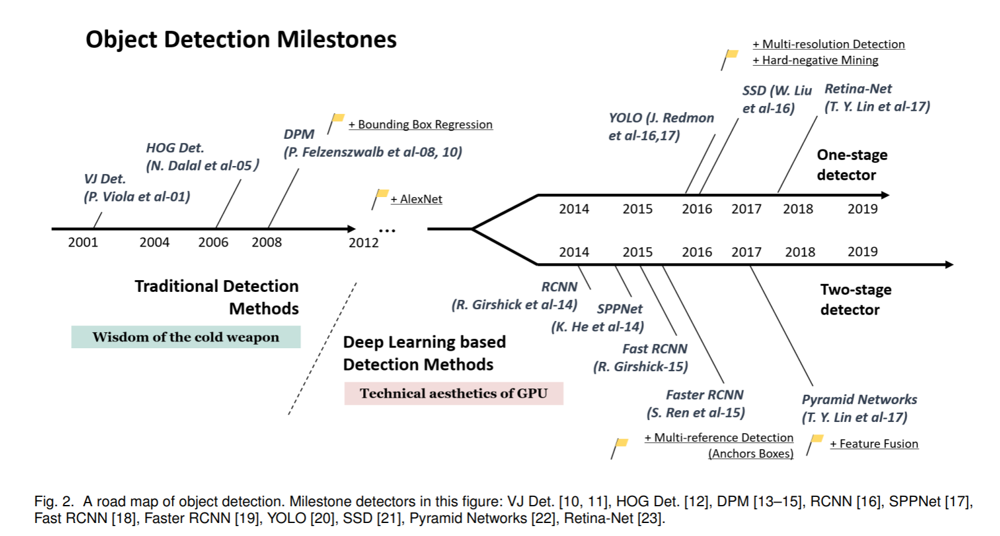
객체 탐지 20년 로드맵 — 2012년 AlexNet 이후 딥러닝 기반으로, one-stage 와 two-stage 로 갈린다
오른쪽이 두 갈래로 갈린다 — 아래가 R-CNN 계열(two-stage), 위가 YOLO 계열(one-stage).
R-CNN — 잘라서 물어본다
2014 · two-stage

R-CNN 4단계 — 입력, 영역 제안 2천 개, CNN 피처 계산, 영역 분류
구조적인 약점
사슬이 끊긴다
경사하강은 손실에서 입력까지 하나의 사슬로 흘러야 한다. 스테이지를 자르면 그 사슬이 끊긴다.
두 단계를 아무리 잘 결합해도 끊긴 자리에서 성능이 뭉개진다 — 그래서 다음 발상이 나온다.
YOLO — 한 번만 본다
2016 · Joseph Redmon · one-stage

YOLO Detection System — 448 리사이즈, 합성곱 한 번, 신뢰도로 걸러내기
박스를 만드는 단계 자체를 없앴다 — 처음부터 균질한 격자로 자른다
칸 하나가 박스와 클래스를 동시에 내놓는다 — 한 텐서 안에서
그래서 역전파가 입력까지 한 사슬로 이어진다
이름은 하나, 만든 사람은 여럿
2026년 9월 기준
버전 번호는 성능 순위가 아니다. 분야에 따라 옛 버전이 더 나은 경우가 흔하다.
울트라리틱스 계열은 AGPL-3.0 — 제품에 넣으려면 소스를 전부 공개하거나 상용 라이선스를 사야 한다.
실습 데이터
AI Hub
한국어와 한국 문화를 학습시킬 데이터는 외국에서 만들어 주지 않는다.
과기부가 몇 조를 들여 만들었다. 전 국민이 모여 라벨링했고, 연구 용도로는 거의 전부 무료다.
오늘 쓸 것 — 교통문제 해결을 위한 CCTV 교통 영상.
계정을 지금 만들어 둘 것. 기말 발표 데이터의 출발점이다.
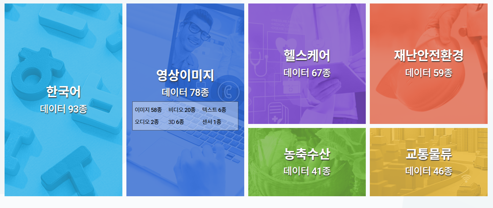
AI Hub 데이터 분류 — 한국어, 영상이미지, 헬스케어, 재난안전환경, 농축수산, 교통물류
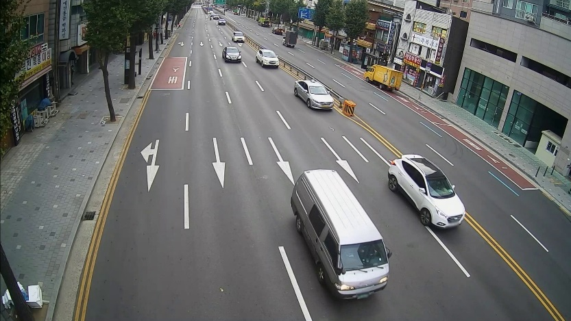
CCTV 교통 영상 — 도로와 차량
한 세트 = 두 파일
박스와 번호
"bbox": [ x, y, w, h ]
"category_id": 1 승용차
"category_id": 4 버스
"category_id": 7 보행자
CNN 기초 외벽은 사진 한 장에 답이 하나였다. 탐지는 답이 여러 개고 각각에 위치가 붙는다.

YOLOv5 by ultralytics
YOLOv5 는 우리 CCTV 데이터를 본 적이 없다. 그런데도 차와 사람을 찾아낸다.
도구를 고르는 기준은 순위표가 아니라 우리 데이터의 생김새다.
CCTV 는 카메라가 고정돼 물체 크기 범위가 정해져 있다 — 그럼 빠른 YOLO 가 낫다.
실무
이건 다시 연구하지 않는다
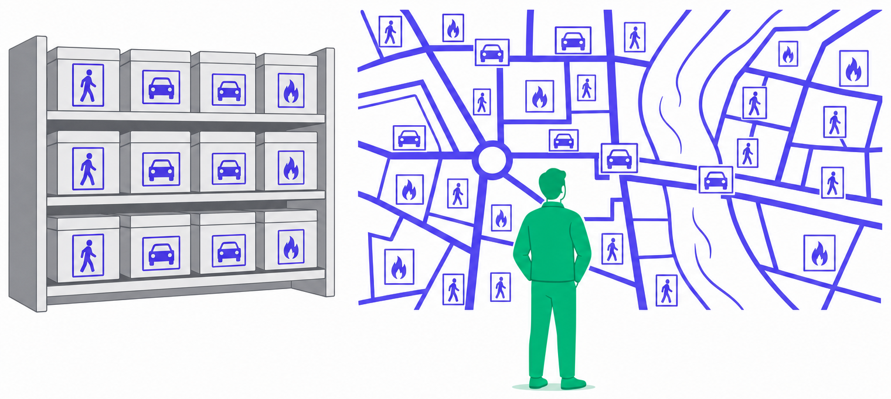
완제품 탐지기가 놓인 선반을 지나쳐 도시 지도를 바라보는 사람
예전에는
이게 정말 사람인지 판단하려고 회귀도 돌리고 통계도 내고 별의별 짓을 다 했다.
지금은
상용 감시 도구도 “YOLO 몇 버전이냐” 만 물어보면 된다. 가중치는 분야별로 계속 공개된다.
여러분이 만들 것은 탐지기가 아니다.
탐지 결과로 무엇을 알아낼지 — 거기부터가 도시공학의 몫이다.
8부 · 분할
물건을 세는가, 땅을 칠하는가
도시공학에서 제일 많이 쓰는 것이 분할이다 — 도시 환경 분석에 그대로 들어간다.
왼쪽을 보고 오른쪽을 그린다
AI Hub · 토지피복지도 항공위성 이미지
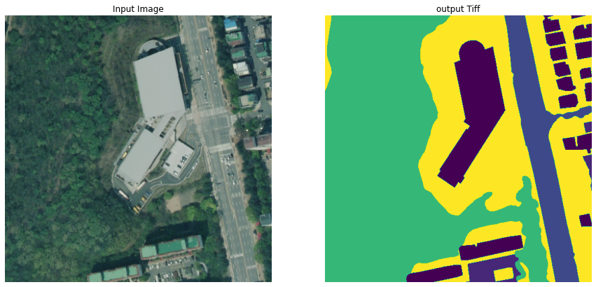
왼쪽 항공 영상 입력, 오른쪽 사람이 그린 토지피복 라벨
이 정도로 정교한 이유 — 한 과제당 1년에 30억~70억. 수백에서 천 명이 달려들었다.
사람이 이미지 위에 일일이 그린 것이다. 라벨링 노동이 곧 데이터의 값어치다.
라벨은 그림이 아니다
TIFF 라스터 · 1채널 · 픽셀에 코드
컬러로 보이는 건 그 코드에 색을 입혀 출력한 것뿐이다.
라스터는 층을 원하는 만큼 만들고 메타에 좌표계까지 넣는다 — 지도에 그대로 얹힌다.

U-Net 구조 — 내려가는 길과 올라오는 길, 그리고 copy and crop
U-Net · 2015
줄였다가
다시 키운다
내려가는 길은 CNN 기초와 똑같다. 크기는 줄고 피처는 늘어난다.
다른 것은 그다음이다. 우리는 플래튼하고 “이게 뭐냐”고 물었다.
U-Net 은 다시 위로 올라가 라벨 이미지 한 장을 그린다.
합성곱을 뒤집었다고 생각하면 된다.
가로로 건너뛰는 선이 핵심이다
실습 구현 · 512×512×3 → 512×512×1
내려가며 잃어버린 세밀한 위치 정보를 같은 높이로 이어 붙인다. 이게 없으면 경계가 뭉개진다.
문제를 단순하게 만든다
아홉 클래스 → 건물이냐 아니냐
이 픽셀이 건물이냐 아니냐 — 그래서 손실은 binary cross entropy. 100 에폭.
실습에서 건물 대신 산림이나 도로로 바꿔 돌려 볼 것. 코드 한 줄이다 — 어떤 클래스가 잘 맞고 안 맞는지가 그대로 발표 거리다.
그 뒤의 분할
DeepLabV3+ · HRNet · Segment Anything
DeepLabV3+
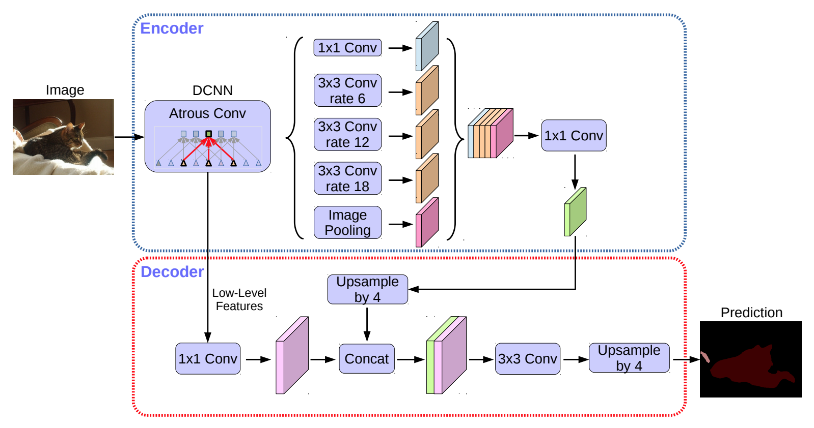
DeepLabV3+ 인코더–디코더 구조
Segment Anything · 2023
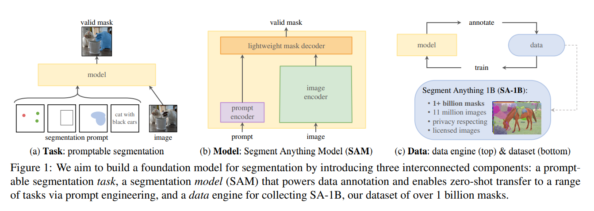
SAM — 프롬프트로 지시하면 그 자리를 잘라낸다
SAM 은 무엇을 찾을지 미리 정해 두지 않는다. 점을 찍거나 박스를 치면 그 자리를 잘라낸다.
이 “시키는” 방식이 2주차 프롬프트와 멀티모달로 이어진다.
멀리 내다보기
줄여서 뽑고, 다시 키워서 그린다
— 생성 모델도 같은 일을 한다
분할은 그려 내는 것이 라벨 이미지였을 뿐이다. 생성은 그 자리에 진짜 그림이 들어간다 — 생성 모델에서 다시 만난다.
3분 · 옆 사람과
하나만 골라 이야기해 보자
Q1 우리 동네 CCTV 에 YOLO 를 붙인다면, 격자 크기를 어떻게 정하겠는가?
Q2 탐지 결과는 답이 아니라 새 변수다. 차량 수와 보행자 수가 시간대별로 나오면 무엇을 분석하겠는가?
Q3 항공 영상 분할로 시계열 변화를 본다면, 어떤 클래스의 증감이 도시 정책과 이어지겠는가?
오늘의 질문에 답한다
답의 모양이 다르면
손실이 달라진다
그리고 지난주 마지막에 본 것 — 합성곱은 이미지 전용이 아니다. 옆자리가 의미 있으면 격자 데이터에도 그대로 쓴다.
다음 순서 — 지금까지는 있는 이미지를 읽었다. 이제 없던 이미지를 만든다. 실습: 21 GAN.ipynb · 24 Autoencoder.ipynb
TRANSITION
read > generate
읽는 쪽에서 만드는 쪽으로
여기까지는 있는 이미지를 읽었다. 이제 없던 이미지를 만든다
생성 모델
생성 모델
없던 이미지를 만들어 낸다는 것은 무엇을 학습한 것인가
중앙대학교 도시공학과 Urban D&A 연구실
오늘의 질문
없던 이미지를 만들어 낸다는 것은
무엇을 학습한 것인가?
이미지를 외운 것이라면 새 이미지가 나올 수 없다. 그럼 무엇을 배운 것인가.
9부 · 손실을 보는 눈을 바꾼다
값을 맞댈 것인가, 분포를 맞댈 것인가

관측값 1·4·5·6·9 와 두 개의 후보 정규분포
최대우도법
어느 분포가
이 점들을 설명하나
1이 나올 확률 × 4가 나올 확률 × 5 × 6 × 9
— 이 값이 가장 큰 분포를 고른다.
파란 쪽에서 1과 4를 뽑을 확률은 아주 낮다. 곱하면 작아진다.
오늘 전체의 전제
분포를 알면
거꾸로 뽑을 수 있다

관측점에 맞춘 분포에서 새 점들이 거꾸로 뽑혀 나오는 그림
값을 맞히는 모델
그 값밖에 못 낸다. 외운 것을 다시 내놓는 데 가깝다.
분포를 맞히는 모델
그 분포에서 새로 뽑을 수 있다. 그게 곧 생성이다.
이미지 픽셀값도 고정된 값이 아니라 어떤 분포를 따르는 관측값으로 볼 수 있다.
잠깐 — 코드 길이 이야기
듣고 나면 크로스 엔트로피가 그냥 이해된다
네 단어를 적는 데 31비트가 들었다. 길이가 길수록 비용이다 — 이 배정이 합리적인가?
자주 나오는 것부터 짧은 코드를
규칙은 그대로, 나눠 주는 순서만 바꾼다
31비트가 22비트가 됐다 — 29% 를 줄였는데 정보는 하나도 잃지 않았다.
한 글자에 평균 몇 칸을 쓰는가
확률 × 길이를 전부 더한 값
확률이 큰 글자에 짧은 칸을 줬더니 평균이 내려갔다. 이 가장 효율적인 평균 길이가 엔트로피다.
그럼 어떤 모양이어야 하나
가로축 P(x) · 세로축 그 글자에 줄 길이
두 사건이 같이 일어날 확률은 곱해진다. 그런데 적는 길이는 더해져야 한다.
곱을 합으로 바꾸는 함수는 로그뿐이다 — 그래서 −log 다.
이름을 붙인다
이것을
엔트로피라 부른다
확률이 1에 가까우면 값이 거의 0 — 짧은 코드.
확률이 0에 가까우면 값이 무한대 — 긴 코드.
H(P) = − Σ P(x) · log P(x)
확률 × 길이를 전부 더한 것. 효율적일수록 작아진다.
entropy
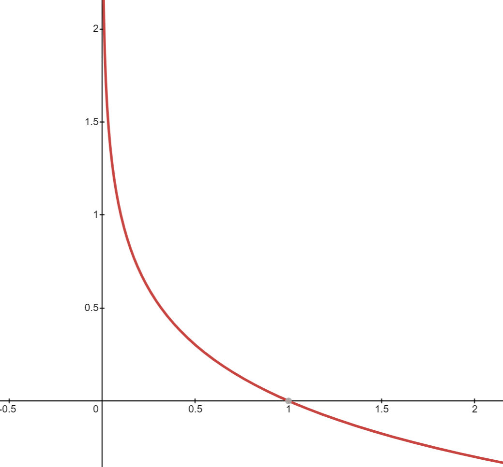
y = −log x — 0 에 가까울수록 무한히 커지고 1 에서 0 을 지나 아래로 내려간다
y = − log x
p(x)
분포가 뾰족할수록 엔트로피가 작다
마우스를 좌우로 움직여 보자
엔트로피는 두 가지를 동시에 재는 값이다 — 한 글자당 필요한 최소 비트 수, 그리고 그 분포가 얼마나 예측하기 어려운지.
확률은 실제에서, 길이는 예측에서
Cross Entropy
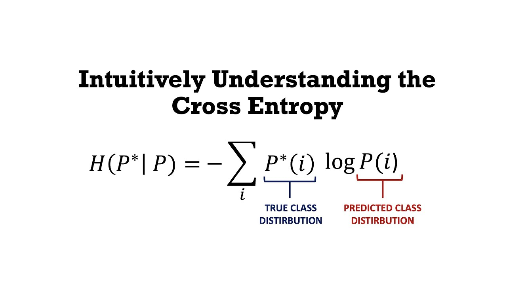
크로스 엔트로피 공식 — 앞은 실제 분포 확률, 뒤는 예측 분포의 −log
이 한 줄이 전부다. 앞은 실제 분포에서, 뒤는 예측 분포에서 가져온다.
예측을 틀어 보자
실제 분포는 고정 · 예측 분포만 마우스로 움직인다
아무리 잘 맞혀도 엔트로피 아래로는 못 내려간다. 그 위에 얹히는 빨간 부분이 어긋나서 더 쓴 양이다.
세 가지 경우로 정리하면
그래서 손실로 쓸 만하다
두 분포가 어긋난 만큼 전체 길이가 비효율적으로 늘어난다. 그 늘어난 양이 곧 손실이다.

두 정규분포와 그 사이의 KL 면적
KL Divergence
더 쓴 만큼만
남긴다
KL = 크로스 엔트로피 − 엔트로피
KL 이 크면 두 분포가 멀리 떨어져 있다.
KL 은 방향이 있다 — P→Q 와 Q→P 가 다르다. 대칭으로 만든 것이 JSD 이고, GAN 의 손실이 그것이다.
9부 정리
지금부터는 분포 대 분포다
뒤에 나올 모든 이론이 이 가정 위에 있다. 여기서 놓치면 나머지가 흐려진다.
이미지에서는 무엇과 무엇을 맞대는가
픽셀 히스토그램이 아니다
10부 GAN — 판별자를 세워서 잰다
11부 오토인코더 — 복원 오차와 잠재분포의 KL 로 잰다
12부 확산 — 잡음을 얼마나 잘 맞혔는지로 잰다
셋 다 분포 차이를 숫자 하나로 바꿔 역전파한다. 재는 방법이 다를 뿐이다.
2014년 논문, 2018년쯤 대유행. 이미지 생성을 유행시킨 사실상의 태초 모델이다.
둘 다 이미
배운 것이다
판별자 — CNN 기초 외벽 모델 그대로. 합성곱 몇 번, 시그모이드로 0/1.
생성자 — 탐지와 분할 U-Net 의 올라오는 길. 난수 100개를 전치 합성곱으로 키운다.
진짜 이미지는 시장에서 긁어 오면 된다. 가짜 이미지가 없어서 생성자가 필요한 것이다.

DCGAN 생성자 — 난수 100개에서 이미지까지 전치 합성곱으로 키운다
첫 번째 차례
생성자를 잠그고 판별자를 가르친다
잠근 생성자로 가짜 만 장을 찍어 두고, 진짜 만 장을 가져온다.
진짜에 1, 가짜에 0 — CNN 기초 벽돌·대리석과 똑같은 문제다.
두 번째 차례 · 여기가 제일 헷갈린다
판별자를 잠그고 생성자를 가르친다
가짜 이미지에 정답을 0 이 아니라 1 로 준다 — 판별자가 속게 만드는 방향.
판별자는 통로일 뿐이다. 기울기만 지나가고 가중치는 그대로다.
둘을 번갈아 돈다
수십 수백 번
서로를 밀어 올린다. 대신 잠갔다 풀었다 하느라 느리고 불안정하다 — 뒤의 한계에서 다시 나온다.
논문의 그 한 줄
min G, max D — 둘이 경합한다

GAN 의 minmax 목적함수
D 는 최대로
진짜에 1, 가짜에 0 을 주도록.
G 는 최소로
판별자가 속도록. 손실은 JSD 를 쓴다.
실습
난수 100개에서
필기체까지
처음 나오는 이미지는 아무 의미 없는 잡음이다. 입력도 난수, 가중치도 난수니 당연하다.
오른쪽 그림은 움직인다 — 30바퀴를 도는 동안 잡음이 필기체로 잡혀 간다. 손실은 binary cross entropy.
런타임을 GPU 로 바꿀 것 — 21 GAN.ipynb

에폭이 지나며 잡음이 필기체로 잡혀 가는 GAN 학습 과정
조건을 붙이면 — Pix2Pix
23 GAN_Pix2Pix.ipynb
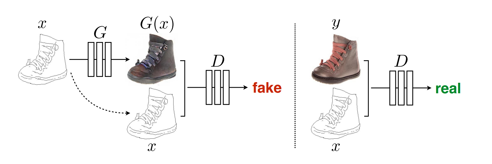
Pix2Pix — 스케치를 주면 진짜 같은 신발을 그린다
탐지와 분할의 항공영상 ↔ 토지피복 라벨 쌍이 정확히 이 구조에 맞는다.
라벨에서 항공영상을 그리거나, 그 반대로.
한계
잘 만들지만, 배운 것만 만든다

똑같은 도자기만 완벽하게 찍어 내는 공방과, 닫힌 문 너머의 낯선 형상들
학습이 오래 걸린다
경합 구조라 잠갔다 풀었다를 반복한다. 느리고 불안정하다.
다양성이 없다
판별자가 학습 이미지 기준으로 진짜를 판단한다 — 배운 것 밖을 못 만든다.
이 한계가 다음 두 모델의 출발점이다.
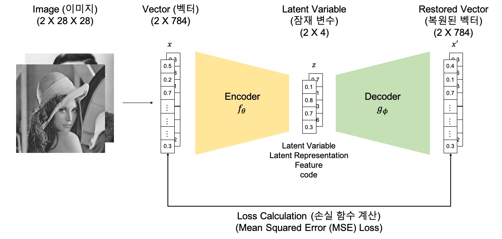
오토인코더 — 이미지에서 잠재변수로, 다시 복원 벡터로
가운데 그 작은 벡터가 잠재변수다 — GAN 의 z 와 같은 이름이고, CNN 기초 피처 벡터와 같은 자리다.
한 층씩 쌓아 올린다
깊은 망을 한 번에 학습시킬 수 없던 시절의 방법

784→1000→1000→500→10 을 한 층씩 따로 학습해 쌓아 올리는 과정
한 칸만 먼저 — 784→1000→784 로 복원해 W¹ 을 얻는다
fix 로 잠그고 그 위에 다음 칸을 올린다 — 조금 전 GAN 의 그 잠금이다
마지막에 전부 이어 붉은 화살표로 한 번 미세조정한다
층마다 표현을 따로 배운다는 이 발상이 사전학습과 전이학습으로 이어진다.

같은 데이터를 PCA 와 오토인코더로 복원했을 때의 오차 비교
PCA 와
선형이냐
비선형이냐
PCA 는 직선 하나로 줄인다. 오토인코더는 같은 일을 휘어진 면으로 한다.
같은 데이터 복원 오차 — PCA 0.024, 오토인코더 0.010. 절반 이하다.

원본 공간과 그 안에 휘어져 놓인 매니폴드
왜 이렇게 줄여도 되나
실제 데이터는
좁은 면에만 있다
키 180에 몸무게 2킬로그램인 사람은 없다. 그런 조합에는 데이터가 아예 없다.
MNIST 도 가장자리는 거의 다 검다. 그 차원은 의미가 없다.
그 좁고 휘어진 면이 매니폴드다. 오토인코더가 찾는 것이 이 면이다.
어느 자로 재느냐에 따라 답이 뒤집힌다
직선 거리 vs 매니폴드 거리

고차원에서의 거리와 매니폴드에서의 거리 비교
같은 점들인데 왼쪽에서는 A1 과 B 가 가깝고, 오른쪽에서는 A1 과 A2 가 가깝다.
중간을 잘못 고르면 사람이 아니게 된다
매니폴드를 벗어난 이미지
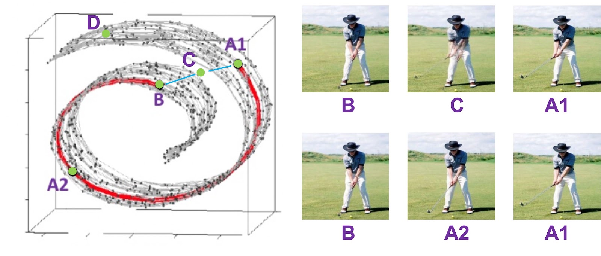
A1 과 A2 의 중간 — 직선으로 잡은 B 와 매니폴드를 따라 잡은 C
직선으로 잡은 중간은 있을 수 없는 자세다. 매니폴드를 따라 잡아야 실제로 있을 법한 자세가 나온다.
오토인코더는 생성 모델이 아니다
그림은 비슷한데 하는 일이 다르다
뽑으려면 잠재공간에 미리 정해 둔 분포가 있어야 한다.
표준정규분포라고 못 박아 두면 그냥 거기서 뽑으면 된다 — 그 못 박는 방법이 VAE 다.
VAE — 점 대신 분포를 낸다
Auto-Encoding Variational Bayes · 2013
① 점이 아니라 동네 — 인코더가 μ 와 σ 를 낸다
② 뽑기는 미분이 안 된다 — z = μ + σ·ε 로 바꿔 길을 튼다
③ 손실이 둘 — 복원 오차 + KL. 9부의 그 KL 이다
결과
그래서 잠재공간이
이렇게 채워진다
KL 이 잡아당긴 덕에 빈 곳이 거의 없다. 아무 데나 뽑아도 된다.
VAE — KL 로 표준정규분포 쪽으로 끌어당겨 채웠다.
AAE — KL 대신 판별자를 붙여 원하는 모양으로 밀어붙인다. 10부의 그 판별자다.
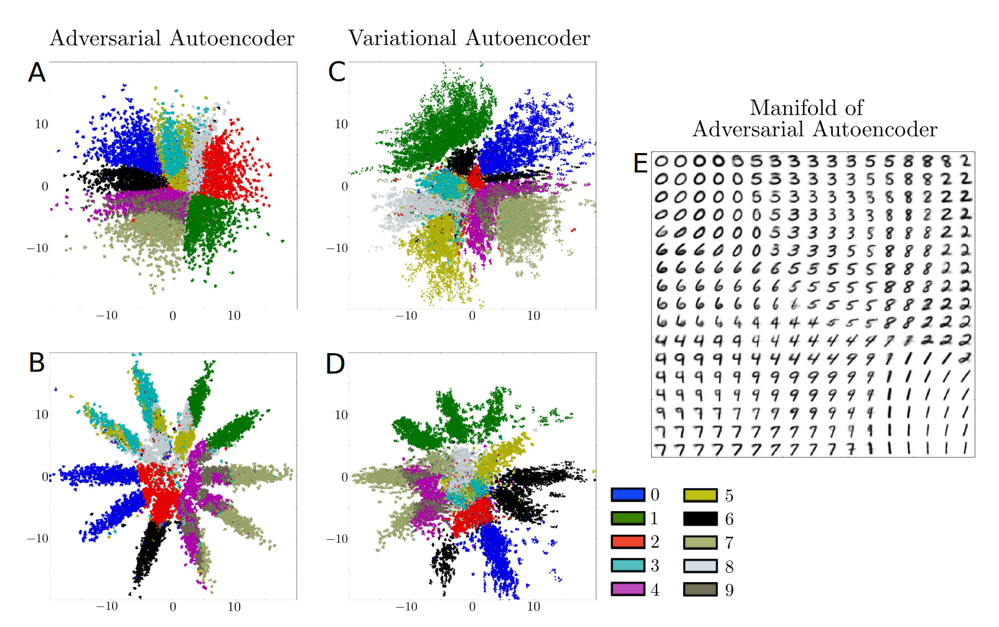
Adversarial Autoencoder 와 Variational Autoencoder 의 잠재공간 분포
12부 · 확산 모델
만드는 법 대신
망가뜨리는 법을 배운다
이미지를 만드는 일
아주 어렵다 — 10부와 11부가 이걸 붙들고 씨름했다.
이미지를 망가뜨리는 일
아주 쉽다 — 잡음만 조금 얹으면 된다.
쉬운 쪽을 배워서 거꾸로 돌린다. 지금 우리가 쓰는 그림 생성기가 전부 이 뼈대다.
발상은 물리에서 왔다
연기는 퍼진다.
그럼 거꾸로 돌리면 되지 않나
완전히 잡음인 상태에서 점점 현실에 있는 이미지에 가깝게 만든다.
잡음을 걸고, 한 칸만 되돌린다
약 1,000 단계
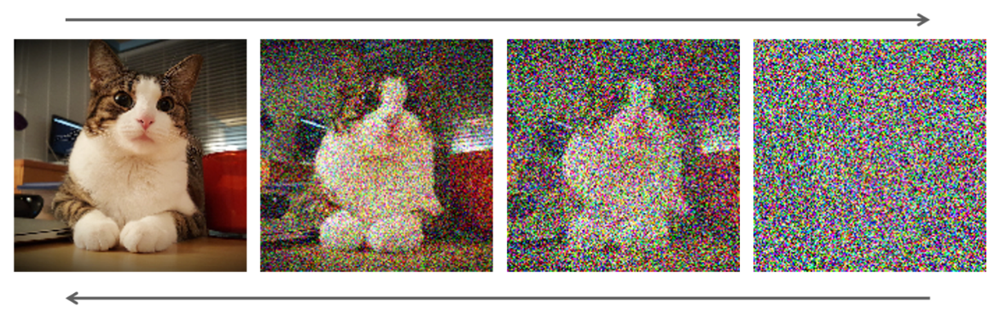
원본 이미지에서 완전한 잡음까지, 그리고 그 반대 방향
그 한 칸을 맡은 것이 U-Net 이다
탐지와 분할에서 배운 그 구조
U-Net · 2015 — 탐지와 분할에서 쓴 그 그림

U-Net 원논문 도해 — 내려가는 길과 올라오는 길, 그리고 가로로 건너뛰는 선
학습 데이터는 실시간으로 만든다 — 128장을 가져와 무작위 단계의 잡음을 그 자리에서 입힌다. 그래서 사실상 무한하다.
셋을 다 갖기 어렵다
Generative learning trilemma · 2021
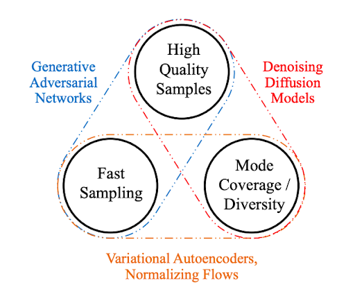
화질·다양성·속도 세 꼭짓점과 그중 둘씩만 잡는 세 계열
확산은 화질과 다양성을 같이 잡았다. 남은 문제는 느리다는 것 — 천 번을 돌려야 한다.
천 번을 어디서 돌릴 것인가
Latent Diffusion · 2021
픽셀 위가 아니라 11부에서 배운 그 잠재공간 위에서 돌린다.
다 끝난 다음에 디코더로 한 번만 키워 이미지로 되돌린다 — 11부와 12부가 여기서 합쳐진다.
Stable Diffusion 의 구조
오토인코더 + 확산 + CLIP — 배운 것이 전부 모인다
VAE — 11부에서 배운 것. 8배로 눌렀다가 마지막에 한 번 키운다
U-Net — 12부에서 배운 것. 잠재공간에서 한 칸씩 잡음을 걷는다
CLIP — 문장을 벡터로. 그 벡터가 U-Net 안으로 들어가 방향을 잡는다
문장은 크로스 어텐션으로
그림의 각 자리가 묻고 문장의 각 단어가 답한다. 2주차 어텐션이 여기서 그대로 쓰인다.
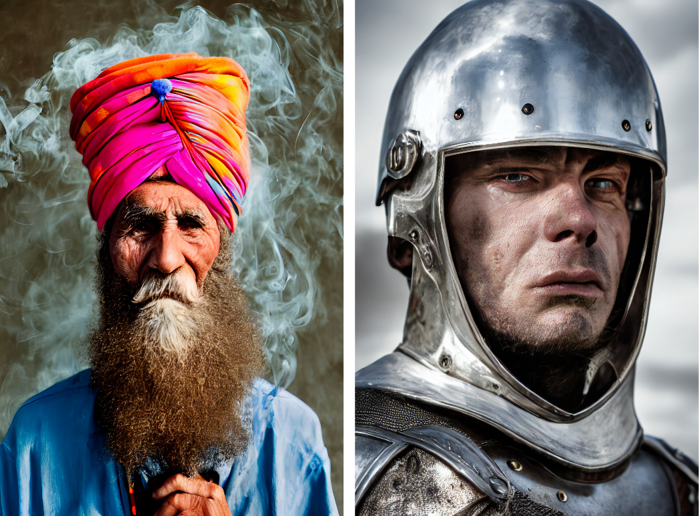
Stable Diffusion 이 문장 하나로 그려 낸 인물 사진 두 장
프롬프트를 길게 쓰면 디테일이 살아나는 이유가 여기 있다 — 단어마다 붙는 자리가 다르다.
2022년 8월 22일
논문이 아니라
가중치를 풀었다
그때까지 이런 모델은 회사 서버 안에 있었다. 우리는 웹으로 부탁만 할 수 있었다.
이건 내려받아서 내 노트북에서 돌린다. 며칠 만에 파생 모델과 도구가 쏟아졌고, 허깅페이스가 그 유통 창구가 됐다.
우리가 연구실에서 이걸 만질 수 있는 이유도 오픈 가중치이기 때문이다.
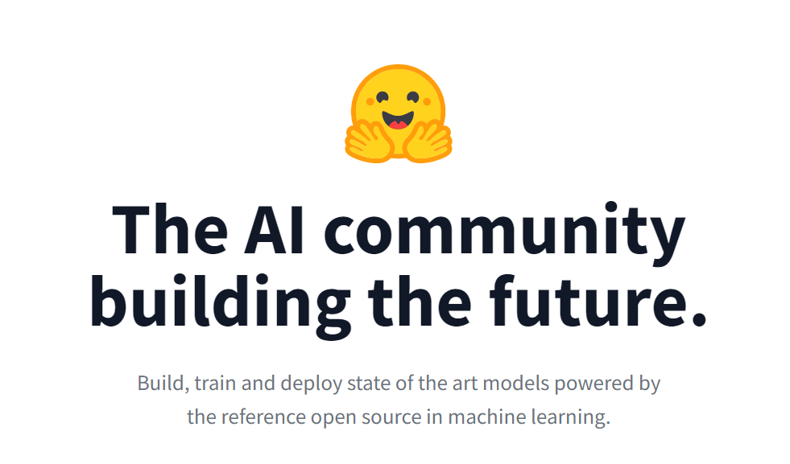
허깅페이스 — 오픈소스 모델 유통 창구
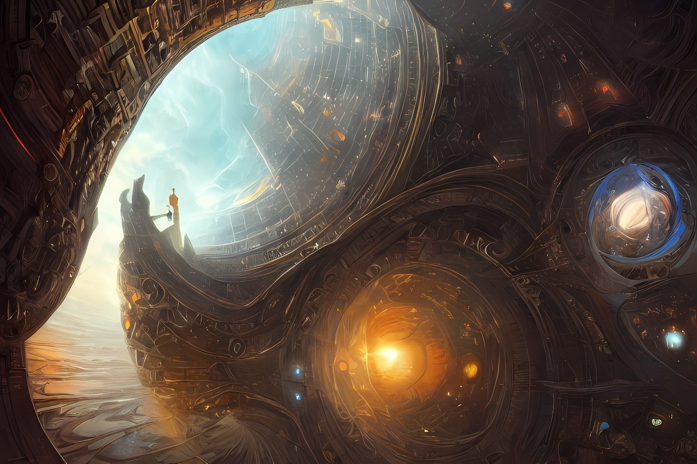
Stable Diffusion 이 만들어 낸 이미지
현장에서는
3천만 원이
500원이 됐다
화장품 포스터 한 번 — 모델, 디자이너, 사진사가 붙어 3천만 원.
지금은 버튼 한 번, GPU 비용 500원. 글로벌 화장품 회사들이 생성 알고리즘 회사를 전 세계에서 인수하고 있다.
그럼 우리 분야에서는 무엇이 대체되고 무엇이 남는가.
Stable Diffusion 이 생성한 이미지
3분 · 옆 사람과
하나만 골라 이야기해 보자
Q1 생성 모델이 학습한 것이 분포라면, 그 분포가 편향돼 있으면 무슨 일이 생기는가?
Q2 우리 도시 데이터에서 “있을 수 없는 중간값” 이 만들어지는 경우는 언제인가?
Q3 탐지와 분할 항공영상–라벨 쌍으로 Pix2Pix 를 돌린다면, 어느 방향으로 만드는 것이 쓸모 있겠는가?
오늘의 질문에 답한다
외운 것이 아니라 분포를 배웠다
셋을 관통하는 것은 9부의 전환이다 — 값이 아니라 분포를 맞댄다.
다음 주는 이미지 생성 실습이다. 오늘 본 모델들을 직접 돌려 본다. 실습: 21 GAN · 24 Autoencoder · 25 diffusion
TRANSITION
pixels > words
이미지와 글자를 한자리에서
여기까지 이미지를 읽고 만들었다. 이제 그 이미지에 말을 걸어 본다
마지막 묶음 · VLM 과 멀티모달
VLM 과 멀티모달
이미지와 글자를 한자리에서 다루려면 무엇이 필요한가
중앙대학교 도시공학과 Urban D&A 연구실
오늘의 질문
이미지와 글자를 한자리에서
다루려면 무엇이 필요한가?
둘 다 벡터로 바꿨다. 그런데 그 두 벡터는 서로 다른 공간에 있다.
13부 · 왜 필요했나
예전에는 OCR 이었다
글자를 읽기만 한다 — 그 글자가 그림의 어디에 붙어 있었는지는 모른다.
표 안의 숫자인지 캡션인지 구분하지 못한다. 파이프라인이 길어 중간에 한 번 틀리면 뒤가 전부 틀린다.
둘 다 벡터인데 따로 논다
CNN 기초 피처 벡터 · 2주차 컨텍스트 벡터
각자 다른 목적으로 학습됐으니 가깝다는 보장이 없다. 필요한 건 둘이 만나는 공간이다.
14부 · CLIP · 2021
이미 있던 짝을 주워 왔다
사람이 라벨을 단 게 아니다 — 세상에 이미 있던 짝을 4억 개 긁었다.
CNN 기초에서 외벽 138장을 손으로 라벨링하던 것과 비교해 볼 것.
대각선만 밝게 만든다
Contrastive Learning · 인코더 둘
번역하는 게 아니다 — 둘을 같은 자로 잴 수 있게 만드는 것뿐이다.
후보 문장만 바꾸면 분류기가 된다
32 VLM.ipynb
이 모델은 강아지를 분류하도록 배운 적이 없다. 그런데 맞힌다.
한국어는 눈에 띄게 약하다. 긴 설명문도 약하다 — 영어 캡션 위주로 배웠다.
앞 자료와 이어 붙인다
그림 생성기에 문장으로 말을 걸 수 있게 된 것이
바로 이것 때문이다
Stable Diffusion 구조도 아래쪽의 CLIP 텍스트 인코더 상자가 이 이야기였다.
같은 자로 재게 해 줬지만, 언어모델 안으로 들여보내 주지는 못했다.
15부 · ViT · 2020
이미지를 단어처럼 자른다
16 × 16 × 3 = 값 768개 짜리 덩어리 하나를 토큰 하나로 본다.
말이 안 되는 것 같지만 된다. 이 순간 CNN 이 통째로 사라진다.
구석과 구석이 바로 만난다
CNN 기초 합성곱과 비교
CNN 이 그렇게 한 이유는 이미지에 버려도 되는 게 많았기 때문이다. 그 가정이 깨졌다.
한동안 결론이 이랬다 — 그놈이 그놈이다. 차라리 CNN 이 가볍고 사전학습된 것도 많다.
MAE · 2021
넷 중 셋을 가리고 그리게 한다
사람 손이 하나도 안 든다. 사진만 있으면 정답이 저절로 생긴다 — 드디어 이미지도 무한해졌다.
글자 읽기가 부산물로 따라왔다
멀티헤드가 각자 다른 것을 본다
OCR 이라는 기술 분야가 통째로 사라졌다.
지금 PDF 를 그냥 던져 넣으면 읽히는 이유가 이것이다.
그림 조각과 문장 단어가 직접 손을 잡는다. 건너갈 필요가 없어졌다.
공공 문서의 그 표가 풀렸다
도시기본계획 · 관리계획 보고서
표 안의 숫자가 어느 행 어느 열에 속하는지를 맥락으로 이해한다.
그럼 여러분이 다루는 도시계획 문서들을 이제 어떻게 다룰 수 있겠는가.
DiT · 2022
U-Net 자리에 트랜스포머를 넣는다
왼손이 여기 있다는 정보를 오른손 자리가 직접 받아서 그린다 — 그래서 디테일이 좋아졌다.
100장을 한 판으로 붙인다
5초 × 초당 20프레임
시작 장면의 조각과 끝 장면의 조각이 같은 어텐션 안에 있다. 그래서 앞뒤가 이어진다.
판을 바꾼 건 두 가지였다
우리 분야의 결측 데이터도 같다. 미국 부동산 시세 알고리즘은 리스팅에 빠진 방·욕실 개수를 마스크 학습으로 채운다 — 이런 맥락이면 욕실이 몇 개일 것이다를 어텐션으로 배우게 한 것이다.
3분 · 옆 사람과
하나만 골라 이야기해 보자
Q1 CLIP 은 한국어가 약하다. 우리 자료로 쓰려면 무엇을 먼저 해야 하는가?
Q2 도시계획 보고서를 통째로 넣을 수 있게 됐다면, 어떤 연구가 새로 가능해지는가?
Q3 마스크드 러닝으로 채울 만한 우리 분야의 구멍 난 데이터는 무엇인가?
오늘의 질문에 답한다
무엇이든 벡터로 바꿔 놓으면
같은 공간에서 다룰 수 있다
이 세 주를 관통한 이야기였다. 여기서부터가 다음 공부의 출발점이다.